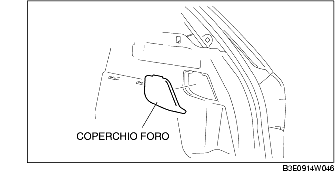

RIMOZIONE/INSTALLAZIONE DISPOSITIVO D'APERTURA SPORTELLO SERBATOIO CARBURANTE [GUIDA A DESTRA]
B3E091466640W02
1. Quando si rimuovere il cavo d'apertura dello sportello del serbatoio del carburante, procedere come segue:
-
• 5HB
-
- Rimuovere il coperchio del foro, dopodiché rimuovere l'arredamento laterale del bagagliaio. (LATO DESTRO)

-
• 4SD
-
- Rimuovere l'arredamento del borgo del bagagliaio (Vedere RIMOZIONE/INSTALLAZIONE ARREDAMENTO BORDO BAGAGLIAIO).
-
- Piegare leggermente all'indietro l'arredamento laterale del bagagliaio. (LATO DESTRO) (Vedere RIMOZIONE/INSTALLAZIONE ARREDAMENTO LATERALE BAGAGLIAIO).
2. Quando si rimuovere il cavo d'apertura dello sportello del serbatoio del carburante, procedere come segue:
-
(1) Batticalcagno anteriore (lato guida) (Vedere RIMOZIONE/INSTALLAZIONE BATTICALCAGNO ANTERIORE).
3. Quando si rimuovere il cavo d'apertura dello sportello del serbatoio del carburante, procedere come segue:
4. Rimuovere quanto segue:
-
(1) Batticalcagno posteriore (lato guida) (Vedere RIMOZIONE/INSTALLAZIONE BATTICALCAGNO POSTERIORE).
-
(2) Sedile posteriore (vedere RIMOZIONE/INSTALLAZIONE SEDILE POSTERIORE.)
-
(3) Arredamento passaruota (lato guida) (Vedere RIMOZIONE/INSTALLAZIONE ARREDAMENTO PASSARUOTA).
-
(4) Arredamento inferiore del montante B (lato guida) (Vedere RIMOZIONE/INSTALLAZIONE ARREDAMENTO INFERIORE MONTANTE B).
-
(5) Sedile anteriore (lato guida) (Vedere RIMOZIONE/INSTALLAZIONE SEDILE ANTERIORE).
5. Staccare parzialmente la copertura del pavimento in modo da consentire la rimozione del cavo d'apertura dello sportello del serbatoio del carburante.
6. Rimuovere il cavo d'apertura dello sportello del serbatoio del carburante dalle graffette A.
7. Rimuovere nell'ordine indicato in tabella.
8. Installare in ordine inverso rispetto alla rimozione.

.
|
1
|
Molla
|
|
2
|
Dispositivo apertura sportello serbatoio carburante
|
|
3
|
Coperchio leva apertura sportello serbatoio carburante
|
|
4
|
Leva apertura sportello serbatoio carburante
|
|
5
|
Cavo apertura sportello serbatoio carburante
|